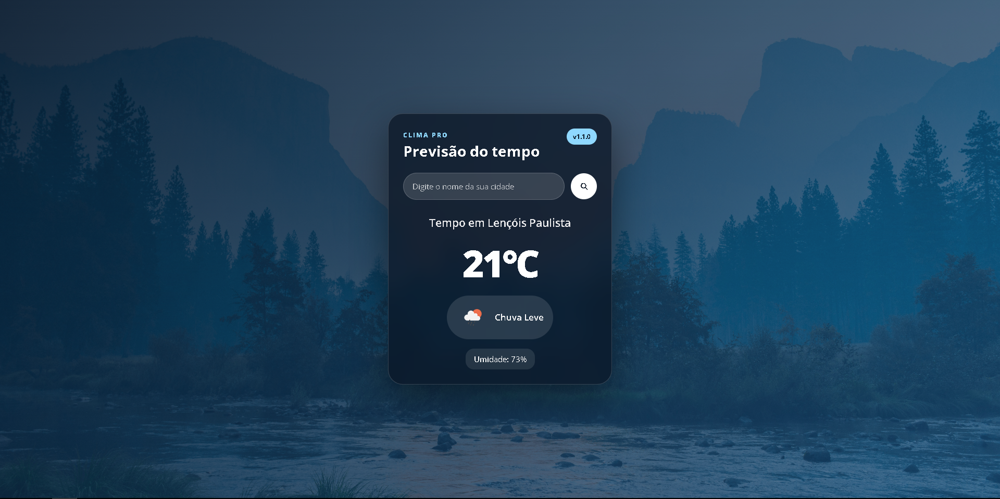
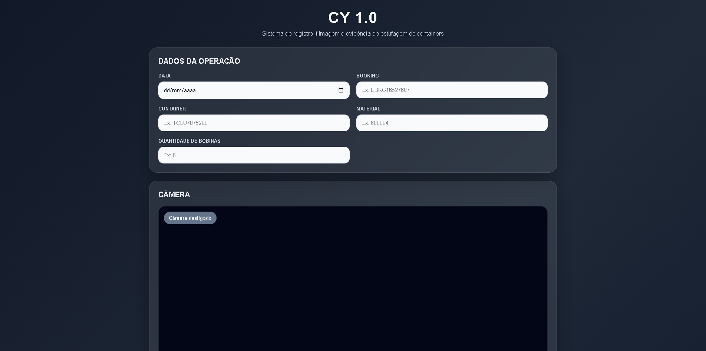

Publicado
Clima Pro
Aplicação web de clima com busca por cidade, geolocalização e interface responsiva.
👋 Olá, eu sou
Criando soluções web modernas, com foco em interfaces intuitivas, performance e boas experiências.
enzo.dev
const enzo = {
nome: "Enzo Toffanin",
curso: "Engenharia de Software",
foco: "Desenvolvimento Web",
skills: ["HTML", "CSS", "JavaScript", "Git"]
};
console.log("Construindo o futuro! 🚀");Projetos
Tecnologias
Evoluindo
Meus projetos
Alguns projetos que desenvolvi para praticar desenvolvimento web, organização de código e criação de interfaces.

Aplicação web de clima com busca por cidade, geolocalização e interface responsiva.

Sistema web experimental para apoio em registro visual de processos industriais.
Sobre mim
Um pouco sobre minha evolução, objetivos e interesses na área de tecnologia.
Sou apaixonado por tecnologia e atualmente estou focado em evoluir como desenvolvedor web e futuro engenheiro de software
Tenho interesse em interfaces modernas, automações, dashboards e soluções criativas voltadas para projetos reais
Acredito que construir projetos reais é uma das melhores formas evoluir como desenvolvedor e transformar conhecimento em experiência
Atualmente utilizo meus projetos pessoais como forma de aprendizado, experimentação e desenvolvimento de experiência prática em programação.
Frontend & JavaScript
Evoluir como Software Engineer
Clima Pro & Operion